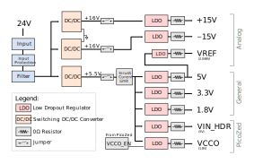

Power Distribution¶
This document describes the design considerations and implementation details for the power distribution subsystem on the Advanced Motor Drive Controller (AMDC). A block diagram is presented and discussed in detail, along with PCB layout considerations. Finally, max power ratings are provided for each voltage rail.
Relevant Versions of AMDC Hardware¶
AMDC REV D
Design Requirements¶
The design requirements for the power input and distribution on the AMDC can be boiled down to a succinct list of conflicting goals. The remainder of this document will summarize the resulting AMDC power system design and how it adheres to these goals. The following describes these goals:
Single voltage input connection for all PCB power.
Efficient DC/DC conversion for various voltage rails (steady state should not be excessively hot for devices).
Low noise on power rails for circuitry (switching DC/DC are noisy; LDOs are preferred).
Power subsystem is not the main goal of AMDC, therefore BOM should be small and inexpensive.
Block Diagram¶

1. Input¶
A screw terminal input is the main source of power. The nominal voltage is 24V, but can support 20-34V range. Around 12W of power is needed to run all of AMDC.
Nominal Inputs |
Value |
Units |
|---|---|---|
Voltage |
24 |
V |
Current |
0.5 |
A |
Power |
12 |
W |
2. Power Protection¶
To protect the circuitry on the AMDC from over-voltage, under-voltage, and reverse voltage input, back-to-back series MOSFETs are used to act as a switch for input voltage. The gates of these MOSFETs are controlled by the LTC4365 device, which is configured to only allow a certain range of voltages (20V to 34V). See the note in the schematics for calculation of the resistor values.
3. Filter¶
Once the power protection circuitry has “approved” the input voltage, it then passes through a Class B EMC Emissions filtering stage. This consists of inductors and capacitors which prevent the source for being affected by poor dynamic AMDC power draw.
4. Bulk DC/DC Conversion¶
The filtered input voltage of 24V is then used by three DC/DC converters to efficiently buck the voltage down to levels needed by the circuitry.
24V to 5V (trimmed to 5.5V) — (P/N: SHHD003A0A4Z)
24V to 15V (trimmed to 16V, 2x) — (P/N: RS6-2415S)
All three DC/DCs are trimmed such that their output is +10% higher than the required voltage so that LDOs can be used later (i.e. 5.5V is the DC/DC output so that a 5V LDO can be used). Note that two different versions of the DC/DCs are available, with the only difference being where the trim resistor goes. Both footprints are provided on the AMDC to allow user BOM flexibility, and one resistor is marked DNP.
The two 15V DC/DC are isolated, which means that their outputs can be used in series to create both positive and negative voltage rails (+/-15V). The mid-point is tied to AMDC common voltage rail (GND).
The output of the 5.5V DC/DC is used by the majority of the AMDC (PicoZed, nearly all ICs, etc), and thus has a large amount of bulk capacitance on its output. In prior AMDC designs, issues arose when the 5.5V DC/DC output was directly connected to the rest of the board – the inrush current caused the DC/DC to current limit and turn itself off. Once it was off, it tried turning back on, thus repeating the cycle and causing a “hiccupping” effect.
To solve this, the inrush limiting block is used on the 5.5V DC/DC output. The main device behind this is the TI TPS22965, a load switch with adjustable rise time. The rise time, set by external capacitor, is set such that the DC/DC does not register a current limiting event. Calculations are provided in the schematics to size this capacitor, but a slower rise time (larger capacitor value) is used in the final design which resulted from experimental test data.
5. Individual LDO Conversion¶
After the DC/DC converters efficiently step the input 24V down to various voltage rails (+/-16V, +5.5V), local LDOs are used to filter the “noisy” DC/DC output for the rest of the AMDC. These LDOs can be grouped into three categories of voltage rails:
Analog front-end
+15V — (P/N: MC78M15CDTRKG)
-15V — (P/N: MC79M15CDTRKG)
VREF — (P/N: REF3020AIDBZR)
PicoZed
VIN_HDR (PicoZed main 5V supply) — (P/N: LT1529CQ-5#PBF)
VCCO (PicoZed 1.8V I/O supply) — (P/N: AP2112K-1.8TRG1)
General purpose
5V — (P/N: LT1529CQ-5#PBF)
3.3V — (P/N: AP2114H-3.3TRG1)
1.8V — (P/N: LT1764EQ-1.8#PBF)
The PicoZed requires power-on sequencing for its two supply rails: VIN_HDR and VCCO. The PicoZed output LV_VCCIO_EN is a 1.8V active high signal that the PicoZed asserts when the carrier board must provide the VCCO voltage rail. This feeds the enable pin of the VCCO LDO. See the PicoZed 7Z030 SOM Hardware User Guide section 2.11 for more information on PicoZed power requirements.
PCB Layout¶
The floor plan of the AMDC circuit board layout is divided into regions for each subsystem. The power input and conversion region is grouped on the left side, with all signals routed using thick traces. A trace width calculator is used to determine an appropriate trace width for various current levels. The copper weight is assumed to be 1oz and a 10-20C temperature rise is considered reasonable. Based upon this, various voltage rails require different trace thicknesses.
As an example, most ICs consume less than 100mA of current, so a default 10mil trace width is used, resulting in negligible temperature rise. However, the power distribution rail for the power stack is designed to support a maximum of 2A, so 50-80mil trace widths are used.
High frequency switching noise is emitted from the DC/DC modules which can affect AMDC operation. Therefore, these “dirty” power rails are kept away from “clean” signals. The voltage rails post LDOs are assumed to be clean, so they are freely routed around the PCB, while DC/DC rails are kept short and localized.
Voltage Rails / Max Current Limitations¶
When trying to reason about max power draw on AMDC, remember that the power distribution resembles a tree structure. This means that the sum of power consumed by leaf nodes must be less than what their parent is able to provide (i.e. since 5V, 3.3V, 1.8V, VIN_HDR, VCCO, and VREF all are generated by LDOs from the +5.5V DC/DC converter, the sum of the low-voltage power must be less than the DC/DC capability).
The PicoZed power requirements change depending on what is running in the FPGA and the clock speeds of the DSPs. Xilinx provides a spreadsheet calculator which can be used to help estimate maximum power draw. Note that typical AMDC firmware does not utilize all FPGA resources, thus does not draw maximum power.
Voltage Rail Name |
Nominal Voltage |
Usage |
Nominal Current |
Max Current |
|---|---|---|---|---|
|
24V |
All of AMDC |
500mA |
~1A (?) |
|
+15V |
Analog positive rail |
??? |
400mA |
|
-15V |
Analog negative rail |
??? |
400mA |
|
5V |
PicoZed main power |
??? |
3A |
|
1.8V |
PicoZed I/O |
??? |
3A |
|
5V |
Nearly all ICs |
??? |
3A |
|
3.3V |
JTAG |
??? |
1A |
|
1.8V |
VIO for FPGA |
??? |
3A |
|
2.048V |
Analog inputs |
??? |
25mA |
The above “???” entries will be measured on the REV D design and this document will be updated accordingly.
Measuring Current¶
Users can measure voltage rail current at a variety of spots on AMDC. See the block diagram above for locations of 0R resistors and jumpers which can be removed to measure current. All LDOs have a 0R resistor at their output and all DC/DCs have a jumper at their outputs.
External Power Consumption¶
Several connectors on the AMDC provide power to external devices (i.e. encoder, power stack, analog sensor, etc). These voltage rails come from the supplies on AMDC, so must adhere to the max power restrictions denoted in the above table. Brief info is given below, but more info can be found in each subsystem’s documentation.
Power Stack Power¶
Each power stack DB15 connector includes two power rails: low voltage and high voltage. The low voltage can either be 3.3V or 5V and is set by a PCB jumper. This low voltage rail can be used as a power supply on the power stack and is the expected I/O voltage level for status signals. Note that the power stack current draw from this low voltage rail should be reasonable, as it comes from AMDC general power rails (see table above).
The high voltage power rail is fed directly from a screw terminal input on AMDC (VIN_PS / GND_IN_PS). These signals are only routed to the power stack connectors. Therefore, the user can supply whatever voltage their power stack needs (e.g. 24V or 12V). The user must not draw more than 2A combined for all power stacks from this high voltage power supply. If the user’s power stack needs more current from the high-voltage rail, they must use their own power supply and reference the AMDC common (GND) to their power stack common.
Analog Power¶
Each analog input RJ45 connector interfaces to two differential input signals and provides +/- 15V power and the AMDC common (GND). Users can use this power supply to power their external sensors, but cannot consume too much power. See table above for maximum ratings.
Encoder Power¶
Each encoder interface DB9 connector provides a power rail for the external encoder. The voltage is 5V but can be disabled by removing the encoder power jumper on AMDC. The above table provides max power draw for the AMD 5V generic rail.
isoSPI Power¶
Each isoSPI interface DB15 connector provides two power rails: 5V and VIN (the main input to AMDC, nominally 24V). The external isoSPI boards can consume either rail but must limit current draw to values denoted in above table.